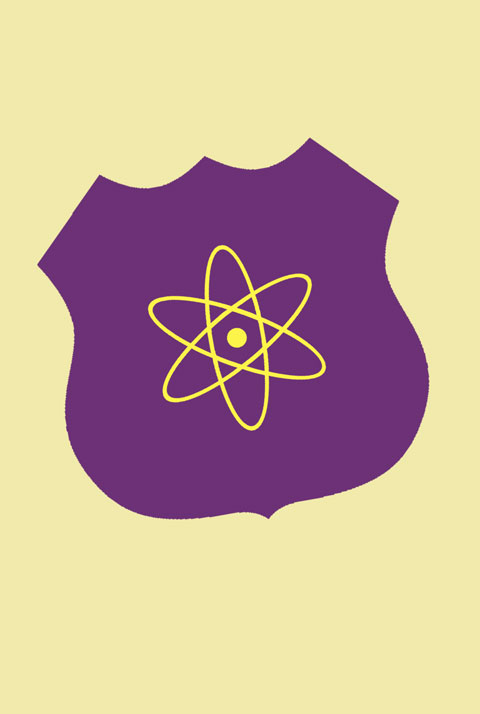

| Term | Description | Example |
| Analogous | These are groups of colors that are adjacent to each other on the color wheel. | |
| Complementary | Situated at opposite ends of the color wheel, these colors create strong contrast. |  |
| Monochromatic | These color schemes are created from a single hue, using shades, tones and tints. This example is a free-use image from FreeImages.com. | |
| Split Color | A split color arrangement involves a base color and the two colors adjacent to its direct complement on the color wheel. | |
| Triadic | A triadic color scheme uses three colors are that evenly spaced around the color wheel—forming a triangle along the lines of one to the other. |